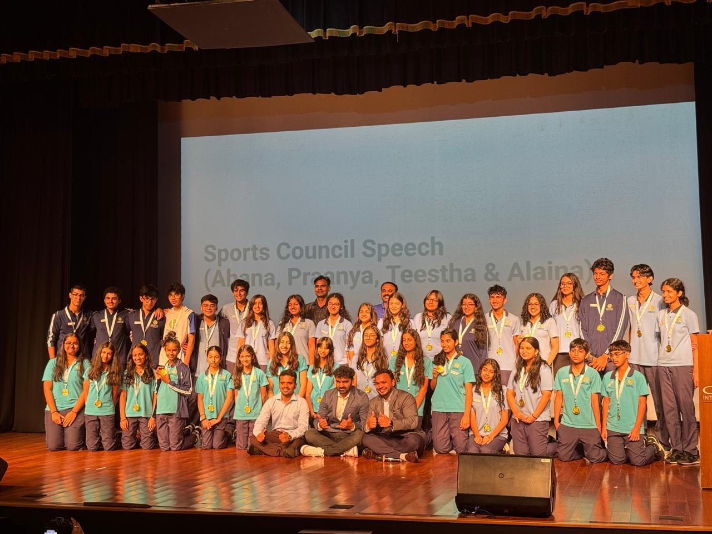

Interact Club of Oberoi Garden City
founding member · 4 yearsFounding member with 4 years of service. Led major projects like the Paint Project and OGC Walkathon, raising over ₹45,000 for club initiatives.
2026-27President
2025-26Vice President
2024-25Treasurer
2024-26Social Media Director


TEDx @ OIS Youth
Head of DesignIn charge of all media, visuals, and content for the TEDx event at school.
DesignMediaContent
Service Council
Founding MemberPart of the school's first-ever Service Council, driving student-led initiatives and community outreach.
service council photo
Sports Council
Member · 2+ yearsHelped host and manage school tournaments including the annual sports fest and inter-school events.

VOX Robotics Council
Head Referee CertifiedFirst-ever robotics council between OIS JVLR & OGC. Hosted mock rounds for VEX IQ. Completed head referee certification.